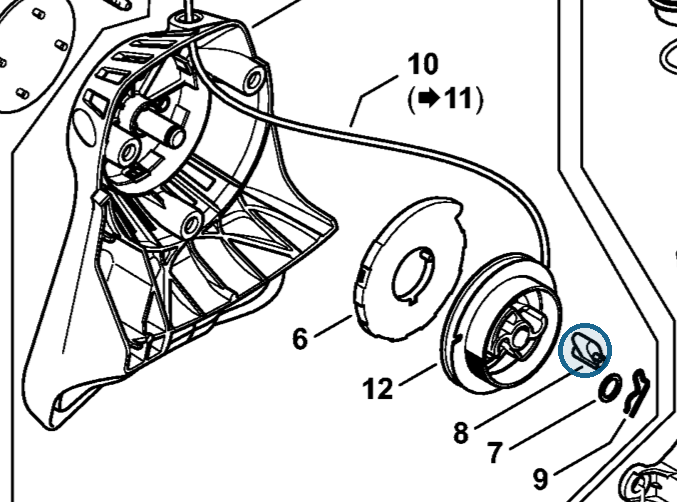
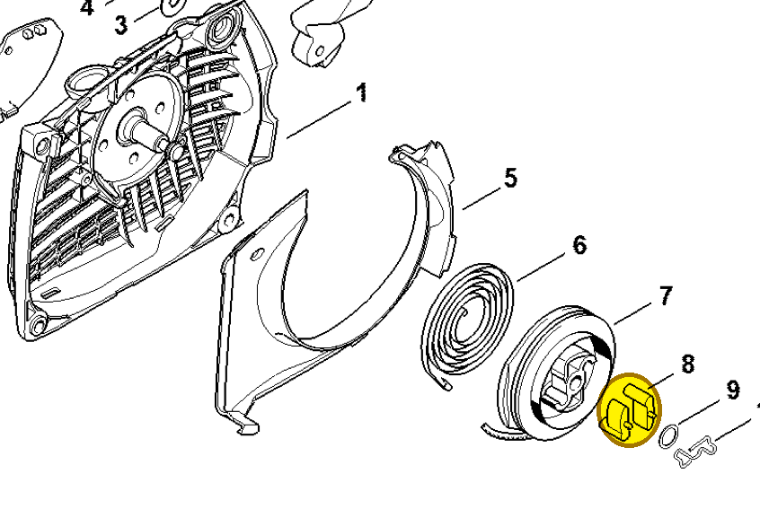
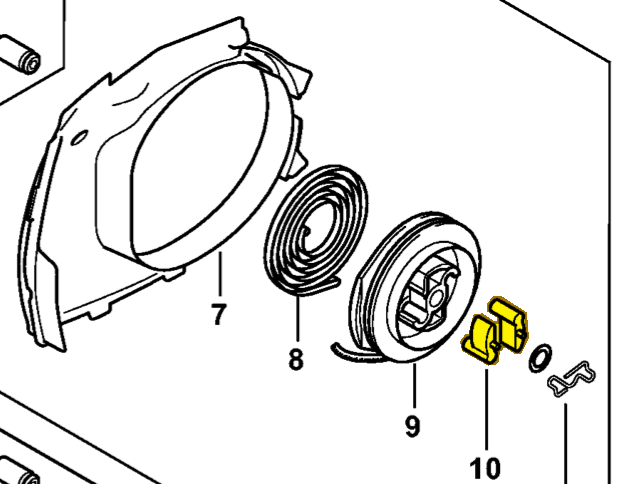

Pawl
0000 195 7200
HT 135 — rewind starter
Manual-listed pawl: 4116 195 7200. Shown in rewind starter 4182 190 4001.
Item 8 Qty listed: 1

HT 135-Z spare-parts list, 10/28/2024. Drawing p. 5; parts table p. 6.
MS 261 — rewind starter
Manual-listed pawl: 1125 195 7200. Shown in fan housing 1141 080 2104.
Item 8 Qty listed: 2

MS 261 C-M spare-parts list, 10/02/2023. Drawing p. 19; parts table p. 20.
MS 462 — rewind starter
Manual-listed pawl: 1125 195 7200. Shown in fan housing 1142 080 2102.
Item 10 Qty listed: 2

MS 462 C-M Z spare-parts list, 10/29/2024. Drawing p. 21; parts table p. 22.
Suggest a correctionGitHub · sign-in required